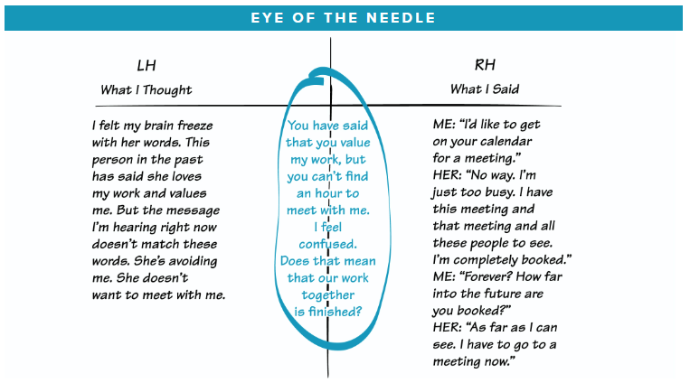

心智模式¶
最好的想法为什么会失败？¶
新观点和知识未能得以实践的原因是，它们与人们内心深处有关世界运行模式的图像发生了冲突，而这些图像则把人们局限在自己习以为常的思考方法和行为方式之中。
没有人头脑里能装得下一个组织、一个家庭或一个社区，我们头脑里装的是图像、假设和故事。
对我来说，认知科学的主要成果就是清楚地展示了……心理表征（mental representation）的活跃程度。—— Howard Gardner The Mind’s New Science
尽管人们不（总是）完全遵照自己口头“声称的理论（他们所说的）”去行事，但他们一定会完全遵照自己实际“实行的理论（他们的心智模式）”去做。—— C. Argyris
要把握心智模式，最重要的是理解其作用的活跃性，即它能决定我们的行动。
在组织中实践¶
帮助开发组织机构显露和检测心智模式的能力的3个要素：
- 提高个人意识水平和反思技能的工具
- 使心智模式修炼制度化的“基础设施”
- 提倡探寻并挑战我们思考方法的文化氛围
工具和技能¶
- 正视我们“声称的理论”（我们所说的）与我们实际“实行的理论”（在我们所做的背后所隐含的理论）之间的区别
- 识别“跳跃性推断”
- 暴露“左手栏”，明确说出我们通常不说的话（左手栏指说话时内心的真正想法，右手栏指实际说出来的话）
- 探寻与宣扬的平衡
心智模式的修炼¶
反思实践¶
反思实践是心智模式修炼的精髓。如果没有反思和在人际交往中学习的技能，学习实践就一定是反应式的，而不是生成性的。
声称的理论和实行的理论¶
一项基本的反思技能是，通过比照我们说的与我们做的两者之间的差距来提高意识水平。
声称的理论和实行的理论之间的差距，可能会引起沮丧、失望，甚至玩世不恭的心态，但这种情况其实是可以避免的。差距常常是愿景带来的结果，而不是伪善所致，问题不在于差距本身，而在于面对差距却不能说出真相。如果没有觉察和承认我们声称的理论和现实的行为之间的差距，就没有学习收获可言。
面对声称的理论和实行的理论之间的差距，我们要问的第一个问题就是：“我真正重要声称的理论的价值吗？” “那真的是我愿景的一部分吗？”
由于实行的理论非常难以辨认，你可能需要另一个人——一个有着“冷酷的慈悲心”的伙伴来帮助你。
智如目者，不能自见其睫。
跳跃性判断¶
跳跃性推断恰恰降低了我们学习的速度，因为我们立即“跳跃”到了一般化的概括，速度之快，让我们无法进行充分的考虑和检验。
我们的理性思维非常善于从具体细节中形成“抽象”概念——把许多细节换成简单概念，然后再用这些概念来推理。然而，当我们不能意识到从细节到一般概念的跳跃过程时，抽象概念推理的能力就恰恰限制了我们的学习能力。俗称的过早下结论。
当我们从直接观察（具体“数据”），不经过检验就到达一般化概念，就出现了跳跃性推断。跳跃性推断阻碍学习，因为它成了不需要证明的东西，它把假设当成了事实。
- 如何辨别跳跃性推断？
- 问自己，关于世界的运作方式你有什么信条，对人的一般性看法，对某些人的看法
- 这种一般性观念是基于什么样的“数据”？
- 我愿不愿意考虑一种可能性：这种一般化观念可能是不准确的或误导性的？
如果你愿意考虑质疑自己的一般性观念，就要把它和它背后依据的“数据”明确区分开。
只要有可能，就应该直接检验一般性观念。这样做经常双腿让我们探寻大家相互交往的行为方式背后的原因。
要承认我们对他人的假设，并引用导致这种假设的数据，这样才能降低防卫反应的可能性。
左手栏（left-hand column）¶

左侧写出心里想但没说出来的话，右侧写出说的话。
左手栏练习能让隐藏的假设成功浮出水面，并且显示它如何影响行为。
探寻与宣扬的平衡¶
没有探寻的宣扬会引发更多的宣扬。不断加强的宣扬，效果就像滚雪球一样，但可以通过问几个问题把雪球停下来，比如：
- 是什么导致你采取这个立场？
- 你能解释你的观点吗？
- 你能提供“数据”或经验来支持你的观点吗？
单纯的探寻是有限的，因为我们几乎总是有自己的观点，这与我们是否相信自己的观点是唯一正确的无关。因此，仅仅是问许多总是的做法，可能成为一种回避学习的方式——把我们自己的观点隐藏在不间断的问题高墙的背后。
宣扬和探寻的结合：每个人都把观点亮出来，供大家检查。这会创造一种真正的有脆弱感的氛围。
用纯粹宣扬的方式，要达到的目标就是赢得辩论。而宣扬和探寻结合的方式，目标就不再是“赢得辩论”，而是找出最佳的论点。
比如，当我们处于单纯的宣扬状态时，我们倾向于有选择的使用数据，只拿出支持我们立场的数据。在解释我们的立场背后的推理时，我们只暴露足够的推理，以便“证明”自己，而回避那些看上去论据很弱的地方。
当宣扬和探寻两者都高度活跃时，我们对揭露不连贯的数据和确认数据两者都持开放心态，因为我们愿意发现自己观点中的毛病。
要找到使两者更平衡的方法，就需要耐心和坚韧不拔。
掌握平衡探寻与宣扬的方法¶
宣扬自己的观点时：¶
- 要让你自己的推理明确暴露出来（例如，说出你是如何得出你的观点的，你所依据的实际“数据”是什么。）
- 鼓励对方提出不同的观点。（即：“你有相反的事实或数据，或者不同的结论吗？”）
- 主动探寻对方与自己不同的观点。（即“你的观点有哪些？”“你是如何得出这种观点的？”“你考虑的数据是否和我考虑的有所不同？”）
探寻对方观点时：¶
- 如果你对对方的观点做出一些假设，就要清楚地加以说明，并承认那些是假设。
- 把你的假设所依据的事实或“数据”亮出来。
- 如果你并不真正地对对方的回答感兴趣（即如果你只是想表现出礼貌，或者想揭露对方），就不要问问题。
当陷入僵局（对方不再对探寻其观点持开放心态）时：¶
- 询问是什么事实数据或逻辑改变了他们的看法
- 询问是否有共同设计实验（或其他探寻方法）的可能，以便得到新信息
当你或对方对表达观点或实验不同的替代想法感到犹豫时：¶
- 鼓励对方（或你自己）想出是什么导致这种困难和犹豫。（即“在这个情况中，或者你我身上，有什么东西使开放的交流变难了？”）
- 如果双方都想克服障碍，就要一起设计出方法来实现。
如果你并不是真正好奇和情愿改变你对某件事的心智模式，这些方法就没有用处。探寻和宣扬的实践意味着情愿暴露你自身思想的局限——情愿证明自己是错误的。你达不到这一点而又要让对方这么做，就既不稳妥，也不安全。
协调一致很重要吗？¶
心智模式修炼实践的目的不一定是要寻求观点的协调一致或融合聚焦。
所有的心智模式都需要在实际情况中经受推敲和检验。还要求我们理解，我们可能永远没办法知道全部真相。
把你喜欢的心智模式强加于人，就如同把你的愿景强加于人，通常会适得其反。即使你的心智模式比别人好，你的角色也不是给别人灌输你的模式，你应当把自己的模式当靶子举起来请别人考虑。
心智模式与第五项修炼¶
如果系统思考缺乏心智模式的修炼，其效力就会大打折扣。这两项修炼可以很自然地结合，一项暴露隐藏的假设，另一项通过重新安排假设的结构来揭示主要问题的起因。
经理人必须学会反思自己现在的心智模式——在占主导地位的假设暴露出来之前，不能指望心智模式会改变，也不能指望系统思考会有什么意义。如果经理人“坚信”自己的世界观就是事实，而不是一系列假设，他们就不愿意挑战自己的世界观。如果他们没有能力探寻自己和别人的思考方法，在实验新思考方法的协作中他们就会受到局限。
组织中如果没有对心智模式的成形的理解和实践原则，大家就会错误地理解系统思考的意义——把它看成画出详尽的世界“模型”的工具，面不是改变我们心智模式的方法。
我们大多数心智模式都经常有系统的缺陷。它们忽略关键的反馈关系，错误地判定时间延迟，又常常只注重有形有象或突出明显，但不一定有高杠杆效益的变量。
大多数游戏参与者在决策时要么看不见关键的正反馈关系，要么不考虑它，而这种正反馈恰恰在他们的恐慌状态中不断强化。
整合系统思考和心智模式修炼所带来的最终回报，不仅是改善我们的心智模式（我们思考什么），还能改变我们的思考方法：从以事件为主导的心智模式，到新的心智模式——它能让我们看清长期变化规律，及其产生和发展背后的结构性原因。